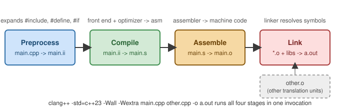

Getting Started
|
This content was generated with the assistance of AI and should be verified against the official documentation before being relied on in production. |
C++ is a general-purpose, statically-typed, compiled language standardized by ISO/IEC JTC1/SC22 Working Group 21 (WG21). It gives direct control over memory and layout (like C) while adding zero-overhead abstractions — classes, templates, RAII — that cost nothing at run time compared to hand-written C. This section targets C++23 (ISO/IEC 14882:2024), the edition current at the time of writing, and flags any feature that is C++20/23-only alongside its C++17 fallback.
The Standard Editions
WG21 ships a new edition roughly every three years. Each is informally named after the year it was ratified:
| Edition | Headline additions |
|---|---|
C++98/03 |
The original ISO standard; the STL (containers, iterators, algorithms). |
C++11 |
|
C++14 |
Generic lambdas, generalized |
C++17 |
|
C++20 |
Concepts, ranges, coroutines, modules, |
C++23 |
|
C++26 |
Not yet ISO-published at time of writing — see C++ Standards and C++26. |
Compilers
Three toolchains track the standard closely and are what this section’s examples are verified against:
-
GCC (
g++) — the GNU Compiler Collection, paired with the libstdc++ standard library. -
Clang (
clang++) — LLVM’s compiler, usually paired with libc++ (though it can also target libstdc++). -
MSVC (
cl.exe) — Microsoft’s compiler on Windows, shipped with Visual Studio.
None of the three has finished every C++23 library feature yet; cppreference’s
C++23 compiler support table is the definitive, continuously updated source for what’s implemented where. This
section’s own examples were compiled with Apple clang 21 and libc++, which accepts every C++23 language
feature used here and provides <print>, <flat_map> and <mdspan>, but not <generator>, <stacktrace> or
<spanstream>; the pages that use those call it out where it matters.
"Hello, World"
C++23 adds std::println (header <print>), which formats and writes a line in one call — no manual "\n",
no std::endl flush semantics to reason about:
#include <print>
int main() {
std::println("Hello, World!");
}
<print> is standard-conformant C++23 (verified against cppreference and the working draft) but is not yet
shipped by every standard library — it needs libstdc++ from GCC 14, libc++ from LLVM 18 (Apple clang 21
has it), or MSVC. The portable C++17 fallback below compiles with any standard library:
|
#include <iostream>
int main() {
std::cout << "Hello, World!\n";
}Compiling
Turning a .cpp file into a running program is four stages — preprocess, compile, assemble, link — that
clang++/g++ run in one invocation:

This section’s examples are written to compile clean under:
clang++ -std=c++23 -Wall -Wextra -o hello hello.cpp
./hello-std=c++23 selects the language edition; -Wall -Wextra turns on the warnings that catch most beginner
mistakes (unused variables, sign comparisons, uninitialized reads). Add -Werror in CI once a codebase is warning-clean,
so new warnings fail the build instead of accumulating.
Compiler Explorer
Compiler Explorer ("Godbolt") compiles a snippet against dozens of compiler
versions/-std= combinations in the browser and shows the generated assembly side by side — the fastest way to
check whether a given compiler actually implements a specific C++20/23 feature before committing to it in a
real project.
From Source File to Running Program
Every C++ program you build goes through the same four stages, even when one command such as clang++ main.cpp
hides them. Knowing the stages tells you which tool is complaining when a build fails: a missing header is a
preprocessor error, a type mismatch a compiler error, and an "undefined reference" a linker error.
(source)"] -->|"1. preprocess
#include, #define"| T["translation unit
(one big text)"] T -->|"2. compile
parse, type-check, optimize"| A["assembly (.s)"] A -->|"3. assemble"| O["object file (.o)
machine code + symbols"] O -->|"4. link
with libc++ and other .o files"| E["executable"]
The running example for this whole section is a small library inventory: Book, Member, Loan and a Library
that ties them together. Later pages grow it with classes, templates, containers, concurrency and coroutines. The
first version is deliberately tiny: an aggregate, a std::vector of books and a loop.
// inventory0.cpp -- the first version of the running example: a tiny library inventory.
#include <print>
#include <string>
#include <vector>
struct Book {
std::string title;
int year;
int copies;
};
int main() {
std::vector<Book> shelf{
{"The C++ Programming Language", 1985, 3},
{"A Tour of C++", 2013, 2},
{"Effective Modern C++", 2014, 0},
};
int available = 0;
for (const Book& b : shelf) {
std::println("{:<30} {} copies={}", b.title, b.year, b.copies);
available += b.copies;
}
std::println("{} titles, {} copies on the shelf", shelf.size(), available);
}$ clang++ -std=c++23 -Wall -Wextra inventory0.cpp -o inventory0
$ ./inventory0
The C++ Programming Language 1985 copies=3
A Tour of C++ 2013 copies=2
Effective Modern C++ 2014 copies=0
3 titles, 5 copies on the shelfThe -Wall -Wextra flags cost nothing and catch real mistakes, so use them from the first file. The compiler used
for every example in this section is Apple clang 21 with libc++, compiled as -std=c++23; the standard library
headers <print>, <expected>, <flat_map> and <mdspan> are available with it, while <generator>,
<stacktrace> and <spanstream> are not (the pages that discuss those features say so).
Looking at each stage
You can stop the pipeline after any stage and inspect what it produced. -E stops after preprocessing, -S
after compilation and -c after assembly:
$ clang++ -std=c++23 -E inventory0.cpp | wc -l
49112$ clang++ -std=c++23 -E inventory0.cpp | grep -c '^struct Book'
1The five-line #include list of the source expands to tens of thousands of lines of library declarations. This is
the main reason C++ compile times grow with every header you add, and the reason modules (see
Namespaces, Modules, and the
Preprocessor) exist.
$ clang++ -std=c++23 -c inventory0.cpp -o inventory0.o && nm -C inventory0.o | grep -E ' T _main$'
0000000000000000 T _mainnm lists the symbols of the object file; T marks code defined here, and _main is the program’s entry point (macOS prefixes C-linkage symbols with an underscore; Linux shows plain main).
Symbols marked U are undefined in this file: they are the library functions the linker still has to find. A
few of them (printed below with nm -u) come from the C++ runtime in the standard library, the rest are
templates that were instantiated inside this object file.
$ nm -u -C inventory0.o | head -5
__Unwind_Resume
std::runtime_error::what() const
std::__1::locale::use_facet(std::__1::locale::id&) const
std::logic_error::logic_error(char const*)
std::length_error::~length_error()Warnings worth turning into errors
A first useful habit is to make the compiler stop on the mistakes that are almost always bugs. This one-line program has an unused variable and a comparison between signed and unsigned values:
#include <vector>
#include <print>
int main() {
std::vector<int> v{1, 2, 3};
int unused = 42;
int i = -1;
if (i < v.size()) {
std::println("i is smaller");
} else {
std::println("i is NOT smaller: -1 converted to a huge unsigned value");
}
}$ clang++ -std=c++23 -Wall -Wextra warn0.cpp -o warn0
warn0.cpp:6:9: warning: unused variable 'unused' [-Wunused-variable]
6 | int unused = 42;
| ^~~~~~
warn0.cpp:8:11: warning: comparison of integers of different signs: 'int' and 'size_type' (aka 'unsigned long') [-Wsign-compare]
8 | if (i < v.size()) {
| ~ ^ ~~~~~~~~
2 warnings generated.
$ ./warn0
i is NOT smaller: -1 converted to a huge unsigned valueNeither line is an error under the standard, which is exactly why they only show up with -Wall -Wextra. In CI use
-Werror (or the narrower -Werror=sign-compare) so a new warning fails the build; see
Build and Tooling.
See Also
-
Program Structure and Compilation — what happens between source file and executable.
-
C++ Standards and C++26 — every edition’s headline features in one table, and what’s coming in C++26.
-
C: Getting Started — the same GCC/Clang/MSVC toolchain seen from C’s side, pinned to C23.